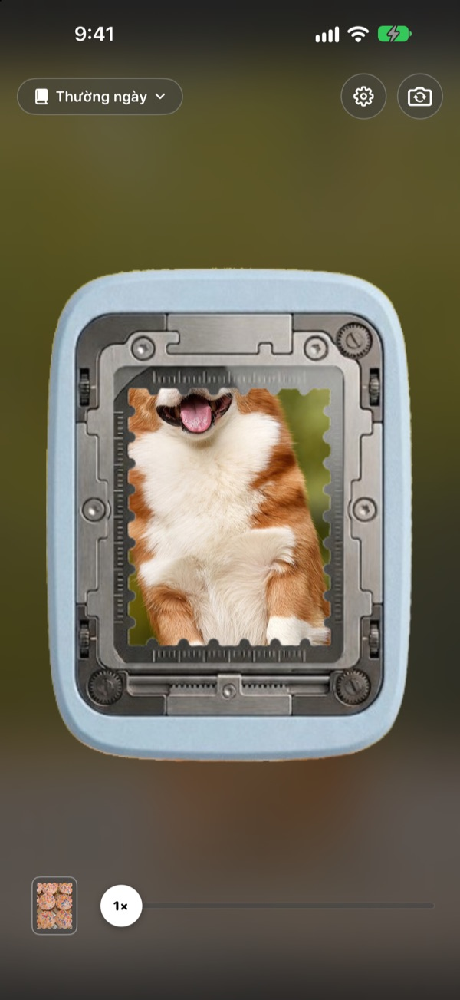
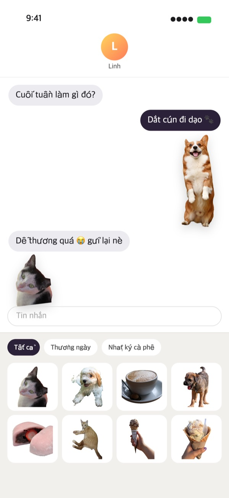
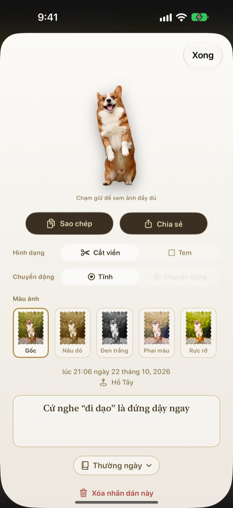
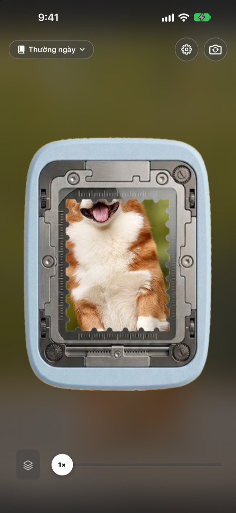

Chạm và giữ,
khoảnh khắc thành nhãn dán
Đặt cảnh vào ô bấm, chạm giữ rồi thả tay. Chú chó được cắt đúng theo dáng của chú, kèm cả chút chuyển động ngắn trước và sau khi bấm. Nhãn dán vừa bấm xong có thể gửi ngay trong Tin nhắn hoặc bàn phím.
Mọi tính năng đều miễn phí. Nhãn dán và ảnh chỉ lưu trên thiết bị của bạn.
Tự tay bấm thử
Chọn một cảnh, chạm và giữ nút bấm rồi thả ra. Bấm xong, thử đổi hình dạng và tông màu xem sao.
Khoảnh khắc đáng yêu cứ nằm ngủ trong thư viện ảnh
Bạn chụp được lúc chú chó thè lưỡi. Muốn gửi thành nhãn dán thì phải tìm ảnh, tách nền, rồi mở thêm một ứng dụng làm nhãn dán. Đến lúc xong, cuộc trò chuyện đã sang chuyện khác. Punching bấm ra nhãn dán ngay tại chỗ, và vừa cất vào bộ sưu tập là nó đã nằm sẵn trong ngăn nhãn dán của Tin nhắn.
Chủ thể được tách riêng, phong cảnh thành con tem
Nếu có thứ để tách, như người, thú cưng hay đồ vật, bạn sẽ nhận được đúng hình dáng đó. Nếu không, như một khung cảnh, ảnh sẽ được bấm thành con tem viền răng cưa.
Chút chuyển động trước và sau khi bấm được lưu cùng, nên nhãn dán biết chuyển động.

Dùng ngay trong Tin nhắn và bàn phím
Nhãn dán vừa bấm xuất hiện trong ngăn nhãn dán của Tin nhắn. Bật bàn phím Punching là có thể chọn và dán sang các ứng dụng khác.
Nhãn dán chuyển động gửi đi vẫn chuyển động. Chạm và giữ để sao chép, rồi dán vào bất cứ đâu.

Đổi hình dạng và tông màu bất cứ lúc nào
Chuyển qua lại giữa tách nền và con tem, chuyển động và đứng yên, tùy ý. Ảnh gốc luôn được giữ lại, nên đổi bao nhiêu lần vẫn sắc nét như lần đầu.
Chọn tông màu Gốc, Nâu đỏ, Đen trắng, Phai màu, Rực rỡ hay Xanh lơ, và ghi thêm một dòng, ngày và nơi chụp.

Gom vào bộ sưu tập, in ra nhãn dán giấy
Tạo bộ sưu tập theo chủ đề, và trong Tin nhắn hay bàn phím bạn cũng chọn theo từng bộ. Chọn nền giấy kraft, ô vuông, kẻ dòng hay giấy da, rồi sắp xếp thứ tự tùy thích.
Biến một bộ sưu tập thành tệp PDF để in có đường cắt hình con tem, rồi in thẳng lên giấy nhãn dán.

Bắt đầu chỉ với ba bước
- 1
Căn vào ô bấm
Đưa thứ bạn muốn giữ lại vào ô giữa camera.
- 2
Chạm giữ rồi thả
Nhãn dán được bấm ra ngay lúc bạn thả tay.
- 3
Cất và gửi
Cất vào bộ sưu tập là dùng được ngay trong Tin nhắn và bàn phím.
Dùng ở đâu, đổi ở đâu
- Tin nhắn
- ＋ cạnh ô nhập ▸ Nhãn dán ▸ Nhãn dán Punching
- Ứng dụng khác
- Bật bàn phím Punching, chuyển bằng nút quả địa cầu rồi chọn và dán
- Bất cứ đâu
- Chạm giữ nhãn dán để sao chép, rồi dán
- Nhãn dán giấy
- ⋯ trong bộ sưu tập ▸ Sử dụng ▸ Tờ nhãn dán để in (PDF)
- Nền giấy và thứ tự
- ⋯ trong bộ sưu tập ▸ Trang trí tự do
- Ảnh cũ
- Nhập từ Ảnh trong bộ sưu tập
- Hình dạng khi bấm
- Cài đặt ▸ Bấm ▸ Hình dạng mặc định
- Xem chuyển động
- Cài đặt ▸ Hiển thị ▸ Tự phát chuyển động
- Mở nhanh
- Mở camera Punching trong Phím tắt hoặc Trung tâm điều khiển
Cài đặt nằm ở nút bánh răng góc trên bên phải màn hình camera.
Câu hỏi thường gặp
Nhãn dán không chuyển động.
Ở góc trên bên phải camera, vào Cài đặt ▸ Hiển thị và kiểm tra Tự phát chuyển động đã bật. Sau đó chạm vào nhãn dán và xem Chuyển động bên dưới Hình dạng đã bật chưa. Chuyển động luôn được ghi lại, nên lúc nào bật cũng được. Ảnh nhập từ ứng dụng Ảnh chỉ có một khung hình nên không chuyển động.
Tôi nhận được con tem thay vì ảnh tách nền.
Cảnh không có gì để tách, như phong cảnh, sẽ tự động được bấm thành con tem. Chạm vào nhãn dán để đổi trong Hình dạng bất cứ lúc nào. Nếu muốn bấm thành con tem ngay từ đầu, hãy đổi Cài đặt ▸ Bấm ▸ Hình dạng mặc định.
Không thấy nhãn dán trong Tin nhắn.
Trong Tin nhắn, chạm nút ＋ cạnh ô nhập ▸ Nhãn dán rồi tìm Nhãn dán Punching. Mục này xuất hiện khi bạn đã bấm ít nhất một nhãn dán trong Punching, và nếu có từ hai bộ sưu tập trở lên, bạn có thể xem theo từng bộ. Hướng dẫn chi tiết có trong Cài đặt ▸ Sử dụng ▸ Dùng trong Tin nhắn và bàn phím.
Bật bàn phím như thế nào?
Trong Cài đặt ▸ Sử dụng ▸ Dùng trong Tin nhắn và bàn phím, chạm “Mở Cài đặt”, rồi vào Bàn phím ▸ bật Nhãn dán Punching. Để dán nhãn dán cần Cho phép truy cập đầy đủ, nhưng bàn phím không đọc hay gửi những gì bạn gõ và không kết nối internet. Sau đó, trong bất kỳ ứng dụng nào, chạm nút quả địa cầu để chuyển sang Nhãn dán Punching.
Tôi muốn in thành nhãn dán thật.
Chạm ⋯ ở góc trên bên phải bộ sưu tập ▸ Sử dụng ▸ Tờ nhãn dán để in (PDF). Bạn sẽ có tệp PDF 300dpi của cả bộ sưu tập, kèm đường cắt hình con tem, in thẳng lên giấy nhãn dán bằng máy in ở nhà hoặc mang ra tiệm in. Các bước chi tiết có trong Hướng dẫn in ở cùng menu.
Những Collection tôi tạo trước đây đi đâu rồi?
Từ phiên bản 1.0.1, nhãn dán chỉ còn một cách gom duy nhất là bộ sưu tập. Mỗi Collection cũ đã trở thành bộ sưu tập cùng tên, giữ nguyên nhãn dán, nền giấy và thứ tự bên trong.
Có chấm xanh lá trên thanh trạng thái.
Đó là đèn báo camera của iOS. Đèn chỉ sáng khi màn hình camera đang mở. Khi bạn mở bộ sưu tập, camera tạm dừng và đèn tắt.
Xóa nhãn dán thì sao?
Nhãn dán, ảnh gốc và dữ liệu chuyển động bị xóa vĩnh viễn khỏi thiết bị, đồng thời biến mất khỏi ngăn nhãn dán của Tin nhắn. Không thể khôi phục, nên hãy cân nhắc trước khi xóa.
Ảnh và nhãn dán được lưu ở đâu?
Chỉ trên thiết bị của bạn. Không có tài khoản, không có máy chủ riêng và không có quảng cáo. Thứ duy nhất rời khỏi thiết bị là thống kê sử dụng ẩn danh, báo cáo lỗi và góp ý do chính bạn gửi. Xem chi tiết trong Chính sách quyền riêng tư.
Có thật sự miễn phí không?
Có, mọi tính năng đều miễn phí. Nếu thích, bạn có thể gửi tiền tip cho nhà phát triển ngay trong ứng dụng, nhưng tip không mở khóa thêm gì cả.
Có câu hỏi hay góp ý, hãy gửi về leeo@kakao.com. Chúng tôi thường trả lời trong 2 đến 3 ngày. Bạn cũng có thể báo lỗi và đề xuất tính năng qua mục issue trên GitHub tại M1zz/StampCamera.